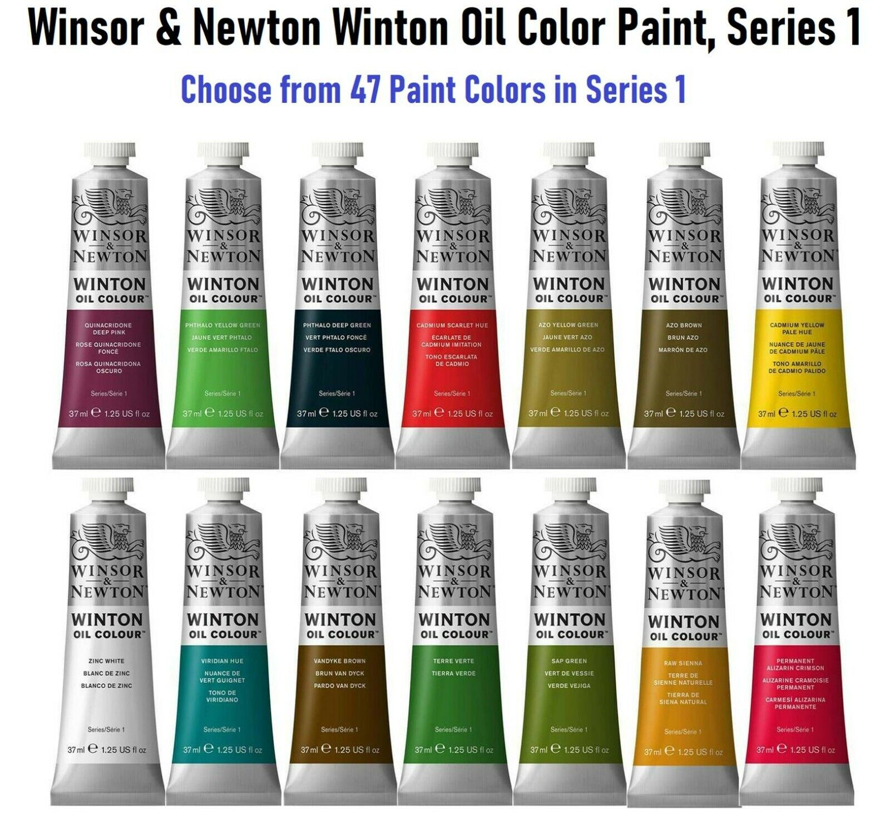
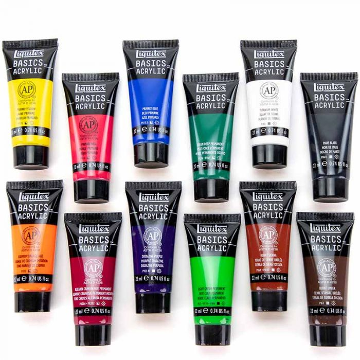
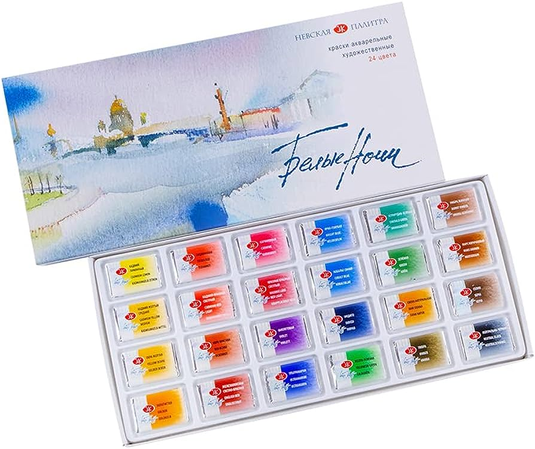

Winton and Newton Oil Paints Set
Products details:
Winsor and Newton brand oil paints "Winton" set of 14. Includes a range of colors and only for the price of $39.99! These student quality paints create high quality and vivid colors. Ready to use with your favorite mineral spirits.
Liquitex Basics Acrylics Set
Products details:
Liquitex Basics Acrylics set of 12. Includes a range of most used colors as well as primary colors. A starter set is perfect for any beginner, or even professional! Thin using water. Only $24.99!
White Nights Watercolor Set
Products details:
White Nights watercolor set of 24. Professional quality of watercolors for only $89.99! This set includes a wide range of shades ready for any project. The pigment compares to no other set, even when diluted. These watercolors will make you feel like a pro in no time!
Services
- Money Back Guarantee if you are not satisfied with your product
- Restored pallets services
- Free returns on destroyed products